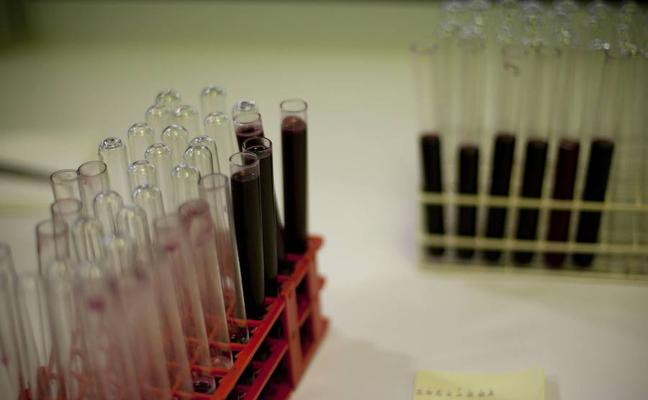
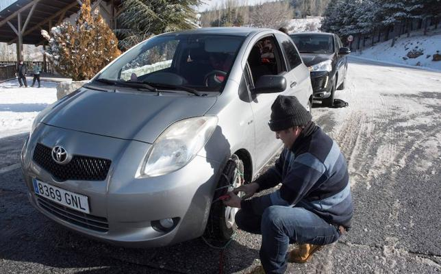
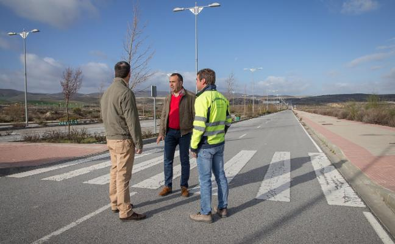
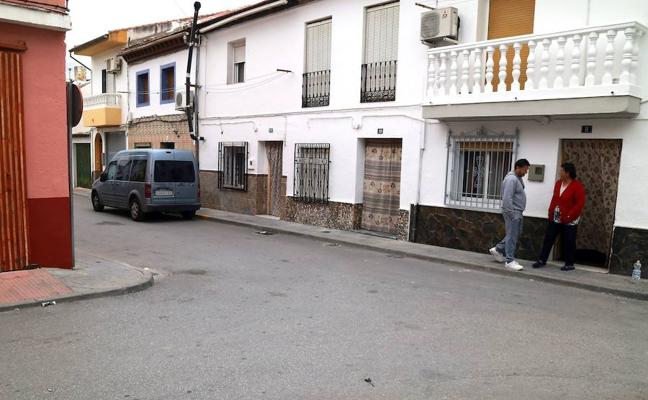

La fiscalía de Granada traslada a Anticorrupción el caso de la "filtracion" masiva de datos del SAS

Caída de cascotes y cornisas y acumulación de nieve en varias carreteras por las condiciones climatológicas

Quiebra la promotora de Marchanlhendín y deja a cien empresarios con 15 millones 'colgados'

En estado muy grave un hombre tras precipitarse por las escaleras del Palacio de Congresos de Granada
Los dos fallecidos en el accidente de tráfico de Fonelas iban a jugar al fútbol a Benalúa de Guadix
Prisión para el detenido por el homicidio de Fuente Vaqueros

Griñán explica que no conocía la partida de donde se pagaban los ERE
Arrestado por hacerse pasar por el párroco de Dúrcal para estafar más de 3.500 euros
Caída de cascotes y cornisas y acumulación de nieve en varias carreteras por las condiciones climatológicas
La fiscalía de Granada traslada a Anticorrupción el caso de la "filtracion" masiva de datos del SAS
Quiebra la promotora de Marchanlhendín y deja a cien empresarios con 15 millones 'colgados'